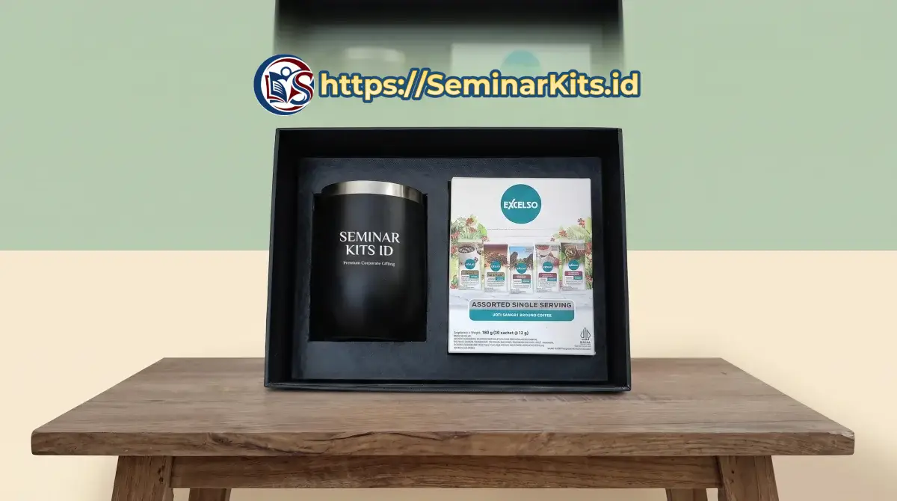

Ringkasan Jawaban Cepat (Direct Answer)
Isi seminar kit standar terdiri dari 4 item inti wajib yang menunjang aktivitas peserta: tas pembawa (goodie bag spunbond, blacu, atau kanvas), buku catatan (notebook spiral atau blocknote A5), instrumen alat tulis (pulpen promosi custom), serta perlengkapan identitas diri (tali lanyard dan ID card). Untuk menaikkan nilai guna dan prestise acara, panitia dapat menambahkan item pendukung seperti tumbler minum stainless, flashdisk materi, map folder, pouch serbaguna, hingga cinderamata ramah lingkungan yang diselaraskan dengan profil audiens, durasi acara, serta pagu anggaran yang tersedia.
- Hierarki 2 Kategori: Terbagi jelas antara item inti operasional (wajib ada untuk mencatat dan identitas) serta item pelengkap prestisius (meningkatkan kesan mewah dan kegunaan pasca-acara).
- Parameter Pemilihan: Ditentukan oleh 6 faktor kunci: profil audiens (mahasiswa vs VIP), durasi acara (setengah hari vs diklat berhari-hari), jenis forum, alokasi budget (RAB), kebutuhan branding, dan format materi (cetak vs digital).
- Efisiensi Budget: Pemilihan paket modular (seperti paket 3-in-1 ekonomis hingga paket 5-in-1 eksekutif) membantu kepanitiaan menghemat biaya pengadaan hingga 30% tanpa menurunkan standar estetika.
- Harmonisasi Identitas: Seluruh item harus menampilkan logo dan palet warna yang konsisten dengan teknik cetak yang tepat (sablon presisi, UV digital print, atau laser grafir).
Menyusun paket seminar kit sering kali menjadi salah satu tahapan paling menantang dalam manajemen kepanitiaan event. Banyak panitia terjebak pada dua kutub ekstrem: terlalu berhemat hingga memberikan barang-barang rapuh yang berakhir di tempat sampah, atau terlalu memaksakan pengadaan pernak-pernik mewah yang membuat anggaran bengkak tanpa memberikan dampak fungsional yang signifikan bagi peserta.
Kunci keberhasilan paket seminar kit terletak pada akurasi komposisi barang. Setiap komponen di dalam tas seminar harus memiliki alasan logis untuk hadir—baik untuk memfasilitasi pencatatan materi saat pemateri berbicara, mempermudah mobilitas di venue, maupun bertindak sebagai media promosi visual yang bertahan bertahun-tahun. Artikel ini membedah panduan lengkap memilih isi seminar kit yang proporsional, elegan, dan tepat sasaran.
1. Cara Menentukan Isi Seminar Kit yang Tepat
Sebelum memutuskan memesan pulpen jenis apa atau tas bahan apa, panitia pelaksana perlu melakukan analisis kebutuhan acara secara terstruktur. Terdapat 6 parameter utama yang menentukan komposisi ideal isi seminar kit:
- Tujuan Utama Acara: Apakah event berfokus pada transfer teori cepat (seminar umum), praktik studi kasus intensif (workshop), atau pembentukan kemitraan bisnis tingkat tinggi (konferensi eksekutif)? Tiap tujuan membutuhkan instrumen kerja yang berbeda.
- Profil Demografis Peserta: Mahasiswa menyukai barang kasual bergaya minimalis seperti tote bag kain kanvas dan gantungan kunci akrilik. Sebaliknya, pimpinan instansi kedinasan, direksi BUMN, dan dokter spesialis menghargai buku agenda kulit organizer, pulpen berbobot metal, serta tumbler vakum berkualitas tinggi.
- Durasi dan Format Pelaksanaan: Seminar setengah hari cukup dibekali blocknote tipis dan tas jinjing ringan. Namun, bimbingan teknis (Bimtek) atau diklat yang berlangsung selama 3 hingga 5 hari membutuhkan tas ransel laptop yang kokoh, flashdisk modul materi, serta botol minum harian.
- Batasan Rencana Anggaran Biaya (RAB): Tentukan batas pagu harga per paket sejak awal. Mengetahui batasan anggaran membantu vendor memformulasikan kombinasi item terbaik tanpa melebihi pagu yang telah disahkan divisi keuangan.
- Kebutuhan Identitas Visual & Branding: Perhitungkan berapa banyak logo instansi, nama kegiatan, dan sponsor pendukung yang wajib ditampilkan. Pastikan item yang dipilih memiliki bidang cetak yang memadai tanpa terlihat terlalu padat atau berantakan.
- Tingkat Formalitas Event: Forum ilmiah atau pelantikan resmi membutuhkan nuansa warna monokromatik, navy, atau hitam yang elegan, sementara festival kreatif atau kompetisi startup kampus dapat mengeksplorasi warna-warna cerah dan desain berani.
2. Item Inti dalam Seminar Kit (Komponen Wajib)
Apapun jenis acaranya, terdapat empat pilar instrumen kerja yang membentuk fondasi utama sebuah seminar kit operasional. Tanpa keempat item ini, sebuah paket belum dapat dikatakan sebagai perlengkapan seminar yang utuh:
Tas Seminar atau Goodie Bag
Tas adalah komponen terluar yang berfungsi ganda: sebagai pembungkus seluruh rangkaian paket sekaligus tas jinjing utama peserta saat membawa berkas makalah, materi presentasi, dan cinderamata pulang ke rumah. Pilihan material tas meliputi:
- Kain Spunbond (Non-Woven): Pilihan paling ekonomis dan ringan untuk seminar berskala massal (ratusan hingga ribuan hadirin). Tersedia dalam gramasi 75 gsm yang ramah anggaran.
- Kain Blacu: Berwarna krem alami bernuansa klasik kasual, sangat disukai komunitas kreatif dan mahasiswa kampus dengan biaya produksi menengah terjangkau.
- Kain Kanvas Drill / Kanvas Premium: Material tebal berdaya tahan tinggi yang memberikan kesan estetik dan tahan dicuci berulang kali untuk pemakaian bertahun-tahun.
- Tas Ransel Laptop (Cordura / D300): Standar emas untuk pelatihan kerja, diklat kedinasan, dan konferensi berhari-hari yang membutuhkan perlindungan kompartemen laptop.
Notebook atau Agenda Kerja
Meskipun era digital berkembang pesat, mencatat intisari materi di atas kertas terbukti meningkatkan retensi memori peserta secara optimal. Pilihan format notebook yang lazim dipakai antara lain:
- Blocknote Jilid Lem A5/A6: Format ekonomis dengan cover art carton cetak full-color dan lembaran bergaris isi 25–40 lembar.
- Notebook Spiral Wire-O: Format fleksibel dengan jilid kawat melingkar yang dapat dilipat 360 derajat, sangat nyaman ditulisi di kursi auditorium tanpa meja kerja.
- Buku Agenda Hardcover Kulit Sintetis: Format premium dengan penutup magnetik, pita pembatas buku, serta kantong selipan kartu nama yang memberikan aura prestise korporat. Kunjungi Katalog Agenda Custom kami untuk melihat aneka modelnya.
Pulpen Custom Cetak Logo
Pulpen promosi adalah pasangan wajib dari buku catatan. Jangan meremehkan kualitas alat tulis; pulpen yang macet saat pemateri berbicara akan langsung memicu kekecewaan peserta. Opsi pulpen mencakup:
- Pulpen Plastik Stylus / Boss: Pilihan favorit dengan tinta lancar 0.5–0.7 mm, bodi ergonomis, dan area cetak sablon logo melingkar yang jelas.
- Pulpen Eco Paper Craft: Terbuat dari gulungan kertas daur ulang ramah lingkungan, cocok untuk event bertema konservasi alam dan keberlanjutan.
- Pulpen Metal Eksekutif: Bodi paduan aluminium atau stainless steel dengan mekanisme putar dan sentuhan akhir laser grafir nama instansi yang permanen dan tidak luntur. Lihat ragam model di Koleksi Pulpen Promosi.
Lanyard dan ID Card Peserta
Tanda pengenal peserta adalah instrumen krusial bagi tim registrasi dan keamanan venue. Tali lanyard berbahan pita tisu premium dengan teknik cetak sublimasi full-color menghasilkan gradasi warna yang tajam, halus di kulit leher, dan tidak luntur terkena keringat. Tali ini dipadukan dengan wadah kartu (card holder) mika transparan atau wadah kulit sintetis eksklusif. Temukan spesifikasinya di halaman Lanyard Custom.

3. Item Tambahan untuk Meningkatkan Nilai Paket
Jika anggaran kepanitiaan Anda memungkinkan, menambahkan satu atau dua item pendukung fungsional akan melipatgandakan kepuasan peserta dan memperpanjang masa aktif promosi merek sponsor. Berikut adalah item tambahan yang paling sering dipilih:
Tumbler Minum Ramah Lingkungan
Di tengah maraknya gerakan eco-friendly event dan pembatasan botol plastik sekali pakai di gedung-gedung pertemuan, tumbler minum menjadi item primadona. Mulai dari botol minum sport berbahan tritan bebas BPA untuk acara semi-formal, hingga termos stainless vakum ganda SUS304 yang mampu menjaga suhu air panas/dingin hingga 12 jam. Tumbler stainless berpenutup LED pengukur suhu dengan sentuhan laser grafir logo adalah salah satu cinderamata yang paling dibanggakan oleh peserta. Cek pilihan lengkap pada Katalog Tumbler Custom.
Pouch Organizer atau Folder Map Dokumen
Bagi pelatihan yang membagikan lembaran silabus modul tebal, sertifikat kelulusan, dan kuitansi pembayaran, folder map bahan kulit imitasi atau map karton laminasi doff sangat berguna agar berkas tidak terlipat. Alternatif lainnya adalah pouch serbaguna berbahan kanvas atau kulit sintetis untuk menyimpan kabel charger, powerbank, alat tulis, dan obat-obatan pribadi.
Flashdisk atau Merchandise Digital
Di era digital, mencetak ratusan lembar modul tebal sering kali dinilai boros kertas dan tidak praktis. Sebagai gantinya, panitia memasukkan materi presentasi, e-book, rekaman video pembicara, dan profil instansi ke dalam flashdisk custom. Model yang sangat digemari adalah flashdisk bentuk kartu ATM dengan cetak UV full-color dua sisi, flashdisk putar swivel, atau flashdisk gantungan kunci berbahan metal.
Item Ramah Lingkungan (Eco-Friendly Set)
Menunjukkan kepedulian lingkungan dapat mendongkrak citra instansi Anda di mata audiens modern. Paket ramah lingkungan biasanya mengombinasikan tas jinjing serat goni/blacu alami, notebook berbahan kertas daur ulang bersertifikasi FSC, pulpen jerami gandum (wheat straw), sedotan stainless dalam kantong pouch beludru, hingga sendok garpu lipat portabel.

4. Rekomendasi Isi Seminar Kit Berdasarkan Jenis Acara
Agar tidak salah sasaran, berikut adalah panduan formula konfigurasi paket yang telah teruji efektivitasnya di ribuan perhelatan event nasional:
Seminar Kampus & Mahasiswa
Acara kemahasiswaan seperti kuliah tamu, seminar nasional BEM, dan orientasi mahasiswa baru umumnya memiliki batasan anggaran ketat namun dihadiri banyak orang. Formula idealnya adalah Paket 3 in 1 atau 4 in 1 Hemat:
- Tote bag bahan spunbond tebal 75 gsm atau blacu polos dengan sablon satu warna.
- Blocknote jilid lem ukuran A5 isi 30 lembar.
- Pulpen plastik promosi warna senada tema acara.
- Tali lanyard 2 cm dengan ID card holder mika transparan.
Workshop dan Pelatihan Teknis (Bimtek)
Pelatihan teknis yang berlangsung 1 hingga 3 hari memerlukan instrumen yang mendukung sesi praktik interaktif. Formula idealnya adalah Paket 4 in 1 atau 5 in 1 Fungsional:
- Tas tote kanvas resleting atau tas ransel cordura compact.
- Buku catatan notebook spiral kawat wire-o sampul hardcover kraft/art carton.
- Pulpen stylus gel atau pulpen pulpen dual-fungsi.
- Flashdisk kartu OTG kapasitas 16GB/32GB berisi modul pelatihan lengkap.
- Tumbler botol minum sport tritan atau termos stainless ringan.
Seminar Perusahaan & Corporate Onboarding
Event korporat seperti rapat kerja tahunan (Rakernas), town hall meeting, dan onboarding karyawan baru mengedepankan identitas korporat yang kokoh. Formula idealnya adalah Paket Corporate Premium:
- Tas selempang laptop multifungsi atau tote bag kanvas kanvas drill tebal.
- Buku agenda organizer kulit sintetis dengan slot kartu nama dan jilid ring binder.
- Pulpen metal eksklusif grafir laser logo perusahaan.
- Tumbler stainless vakum SUS304 dengan layar LED penunjuk suhu.
- Lanyard sublimasi kain tisu halus dengan stopper dan cantolan putar logam kokoh.
Konferensi Nasional & Tamu Undangan VIP
Untuk forum internasional, pemateri ahli, dewan juri, pejabat dinas, dan tamu undangan kehormatan, presentasi visual kemasan menjadi faktor penentu. Formula idealnya adalah Executive Gift Set Hardbox:
- Kotak kemasan hardbox eksklusif berlapis kertas fancy paper dengan penutup magnetik dan busa cetak (foam eva) presisi di dalamnya.
- Agenda kulit mewah beremboss logo instansi emas/perak (hot stamping foil).
- Set pulpen metal rollerball dan flashdisk metal senada dalam tempat khusus.
- Termos stainless premium dengan teknologi isolasi termal ganda.
- Powerbank nirkabel (wireless charging) atau plakat kristal apresiasi narasumber. Pelajari opsi eksklusifnya di halaman Seminar Kit Premium.


5. Rekomendasi Isi Paket Berdasarkan Alokasi Budget
Untuk memudahkan divisi keuangan (bendahara acara) dalam menyusun Rencana Anggaran Biaya (RAB), berikut adalah matriks kisaran harga dan komposisi item yang dapat Anda peroleh di produsen langsung seperti Seminarkits.id:
| Tier Budget | Estimasi Harga / Set | Komposisi Item Paket | Cocok untuk Event |
|---|---|---|---|
| Tier Ekonomis | Rp 15.000 – Rp 25.000 | Tas Spunbond 75 gsm + Blocknote A5 jilid lem + Pulpen plastik sablon 1 warna. | Seminar massal kampus, kuliah umum, sosialisasi publik. |
| Tier Standar | Rp 30.000 – Rp 55.000 | Tote bag blacu/kanvas drill + Notebook jilid spiral A5 + Pulpen promosi + Lanyard tisu sublimasi & ID card. | Seminar nasional, pelatihan internal, bimtek kedinasan. |
| Tier Premium | Rp 65.000 – Rp 120.000 | Tas kanvas tebal / tas selempang + Agenda hardcover + Tumbler stainless SUS304 + Pulpen metal / Flashdisk kartu. | Pelatihan korporat eksekutif, workshop intensif berbayar. |
| Tier VIP Eksekutif | Rp 150.000 – Rp 350.000+ | Hardbox eksklusif magnetik + Agenda kulit organizer mewah + Termos LED grafir + Powerbank / Smartpen metal. | Tamu kehormatan, pembicara narasumber, jajaran dewan direksi, RUPS. |
6. Cara Menyatukan Branding dan Fungsi Produk
Sebuah seminar kit yang sempurna bukan sekadar kumpulan barang acak yang dimasukkan ke dalam satu tas, melainkan cerminan profesionalitas identitas instansi. Agar elemen promosi tidak merusak estetika produk, terapkan prinsip-prinsip desain berikut:
- Konsistensi Palet Warna (Color Harmony): Tentukan 1 hingga 2 warna utama yang menjadi benang merah seluruh item. Misalnya, jika warna korporat Anda adalah biru navy dan emas, pastikan warna tas, cover buku agenda, tali lanyard, dan botol minum berada dalam rumpun warna yang senada.
- Penempatan Logo yang Proporsional: Hindari mencetak logo berukuran raksasa yang memenuhi seluruh bidang barang. Logo yang dicetak secara proporsional dan minimalis justru memancarkan kesan berkelas, sehingga peserta bangga menggunakannya di tempat umum setelah acara selesai.
- Pilihan Teknik Cetak yang Sesuai Material: Gunakan sablon rubber/plastisol presisi untuk media kain tas, digital print UV beresolusi tinggi untuk permukaan notebook dan flashdisk kartu, serta laser grafir permanen untuk permukaan logam tumbler atau pulpen metal. Laser grafir tidak akan pernah terkelupas meskipun dicuci ratusan kali.
- Sertakan Informasi Kontak Ringkas: Pada sampul belakang buku catatan atau kartu sertifikat, cantumkan alamat situs resmi instansi, akun media sosial, atau tautan QR code materi agar audiens mudah terhubung kembali di masa depan.
7. Checklist Praktis Memilih Isi Paket Seminar Kit
Sebelum menerbitkan Surat Pesanan (SPK) atau melakukan transfer uang muka (DP) ke pihak vendor souvenir, pastikan tim panitia Anda telah memvalidasi checklist verifikasi berikut:
8. FAQ (Tanya Jawab Seputar Isi Seminar Kit)
Berikut adalah jawaban atas beberapa pertanyaan yang paling kerap diajukan oleh panitia pelaksana mengenai pemilihan isi paket seminar kit:
Isi standar seminar kit minimal terdiri dari 4 item operasional utama: tas pembungkus (goodie bag spunbond, blacu, atau kanvas), buku catatan (blocknote atau notebook spiral), pulpen promosi cetak logo, serta tali lanyard beserta ID card pengenal peserta.
Item wajib adalah tas, alat tulis (pulpen), buku catatan, dan tanda pengenal (lanyard/ID card) karena digunakan langsung selama sesi materi. Item opsional mencakup tumbler minum stainless, flashdisk modul, payung, pouch organizer, pin peniti, dan sertifikat fisik yang berfungsi meningkatkan nilai prestise paket.
Untuk seminar kampus/mahasiswa, prioritaskan paket ekonomis fungsional (totebag blacu, blocknote A5, pulpen). Untuk workshop teknis/bimtek, gunakan notebook tebal, pulpen stylus, dan flashdisk template kerja. Untuk seminar korporat dan VIP, gunakan buku agenda hardcover kulit, tumbler stainless SUS304 vakum, dan pulpen metal premium yang dikemas hardbox elegan.
Budget berkisar dari tier ekonomis Rp 15.000 - Rp 25.000 (paket 3 in 1 spunbond), tier standar Rp 30.000 - Rp 55.000 (paket kanvas/blacu 4 in 1), tier premium Rp 65.000 - Rp 120.000 (tambahan tumbler atau flashdisk), hingga tier eksekutif VIP di atas Rp 150.000 dengan packaging hardbox magnetik.
Ya, seluruh item di Seminarkits.id dapat dicustomisasi secara terpadu mengikuti panduan identitas visual (brand guidelines) instansi Anda, baik melalui teknik sablon presisi, cetak digital full-color UV, grafir laser permanen, maupun bordir komputer pada tas.
Konsultasikan Isi Seminar Kit Anda Bersama Kami
Masih ragu memilih paduan isi seminar kit yang paling sesuai dengan pagu anggaran Anda? Dapatkan rekomendasi komposisi terbaik dari tim konsultan Seminarkits.id, lengkap dengan fasilitas gratis pembuatan mockup desain 3D, sampel fisik, dan penawaran harga pabrik resmi.
Artikel Edukasi Pengadaan Terkait